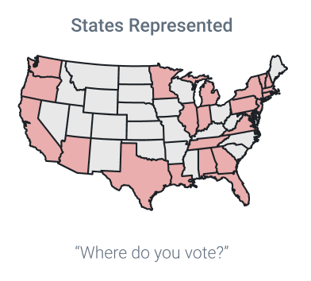
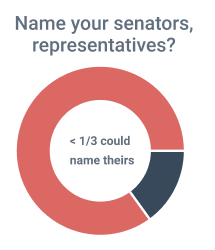
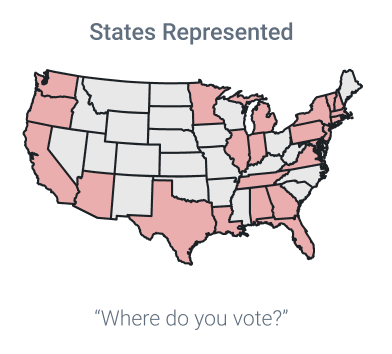
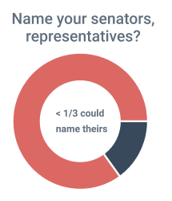

Start-Up
Kat Machin (Designer)
Manny Gorotiza (Founder)
Ella Feldmann (Founder)
.
4 weeks
Photoshop
Illustrator
Figma
Lead Designer
Ideation
User Research
Prototyping
High-Fidelity design

Politigo brings the people back into U.S. politics.
A fundamentally positive media platform that breaks political engagement down into steps that people can easily follow.
The number of millenials (age 18 - 35) elligible to vote is equivalent to the number of people over the age of 74 elligible to vote (Pew Research Center). However, the younger voters turn out to vote in significantly lower numbers.
Why’s that? Do they feel they’re civically engaged? Is the rise of the social media politician inevitable? We suspect it will be. From AOC to Beto O’Rourke, our elected-leaders are embracing internet culture.
Can we lean into the disposition of millenial audiences to promote and sustain civic engagement at every stage of the democratic process?
1) Increase civic engagement
2) Political candidate transparency
3) Informational accessibility
Interviews & Surveys
Persona creation
Product sitemap
Wireframe
Hi-fidelity Mockup
Survey Method Participants (n=150) Approached potential users in pairs, alternating roles: dialoguer, data collector
 



While the majority of respondents consider themselves to be politically engaged, less than one-third knew the names of their federally elected officials.
56% wished they had more of a voice in politics
62% are interested in current legislation
57% want to know who their friends are voting for
| Bio | Goals | Pain Points | |
|---|---|---|---|
| Naomi Age 25 Occupation Engineer Status Single Location New York |
Naomi works as an engineer at a tech company. Naomi is tech savvy. she sees political posts on social media often. She often googles and has to face a plethora of google links to find information about her city representatives She wants to feel represented. |
- Identify and be informed about her city, state, national representatives - Become more involved in local government and elections in general - Become aware of bills passing into legislature |
- Its difficult to keep track of local elections - I Dont know who my local and state representatives are? - proposed Bills are very long - Im not sure what my representatives support - unaware of who funds my representatives |
| Citizens | Representatives | |
|---|---|---|
| Who? | |
|
| Needs |
|
|
| Problem | |
|
Color Schemes
The color scheme is intended to be impartial yet patriotic
Typeface
Roboto
Light
Regular
Bold
What I learned
User privacy optimization
Researching the depths of Google’s Material Design guidelines to validate user accessibility with ideating visual design components.
Challenges
Impartial representation of political information
Ethical standards
Monitoring user behavior that abides by ethical standards
Combatting misinformation
Next Steps
Conduct usability testing on usertesting.com.
Conduct A/B testing with the first prototype using Principle or Invision.